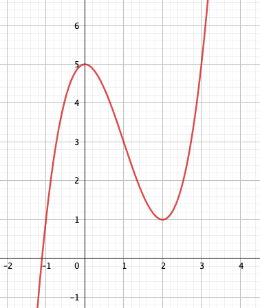
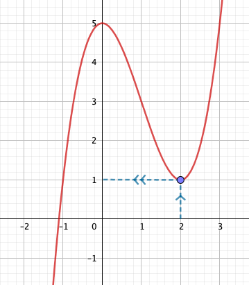
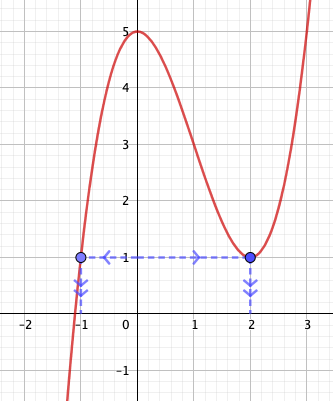

Objectif : trouver les images et antécédents à partir d'un graphe
Exemple : Trouver l'image de 2 par la fonction \(f\) représentée ci-dessous.
On se place au niveau de la valeur 2 en abscisses. On cherche le point correspondant sur la courbe, puis la valeur correspondante sur l'axe des ordonnées.
L'image de 2 par la fonction \(f\) est donc 1.
👍 L'image se lit sur l'axe des ordonnées.
Pour connaître l'image de 2 par une fonction \(f\) représentée par une courbe, on se place donc sur l'axe des abscisses à la valeur 2, puis on observe sur la courbe de \(f\) le point correspondant. Il suffit ensuite de lire la valeur correspondante sur l'axe des ordonnées.
Exercice type :
Trouver l'image de 2 par la fonction représentée ci-dessous
On lit sur le graphe que l'image de 2 est 2.
Exercice d'application :
A partir du graphe ci-dessus, trouver les images de -3, -2, 0, 5.
Exemple : Trouver les antécédents de 1 par la fonction \(f\) représentée ci-dessous.
On se place au niveau de la valeur 1 en ordonnées. On cherche le point correspondant sur la courbe, puis la valeur correspondante sur l'axe des abscisses.
Les antécédents de 1 par la fonction \(f\) sont donc -1 et 2.
👍 Les antécédents se lisent sur l'axe des abscisses.
Pour connaître les antécédents de 1 par une fonction \(f\) représentée par une courbe, on se place donc sur l'axe des ordonnées à la valeur 1, puis on observe sur la courbe de \(f\) le ou les points correspondants. Il suffit ensuite de lire la ou les valeurs correspondantes sur l'axe des abscisses.
Exercice type :
Trouver le ou les antécédents de -3 par la fonction représentée ci-dessous
On lit sur le graphe que l'antécédent de -3 est -5.
Exercice d'application :
A partir du graphe ci-dessus, trouver le ou les antéceédents de 0, 1, 3, 4.